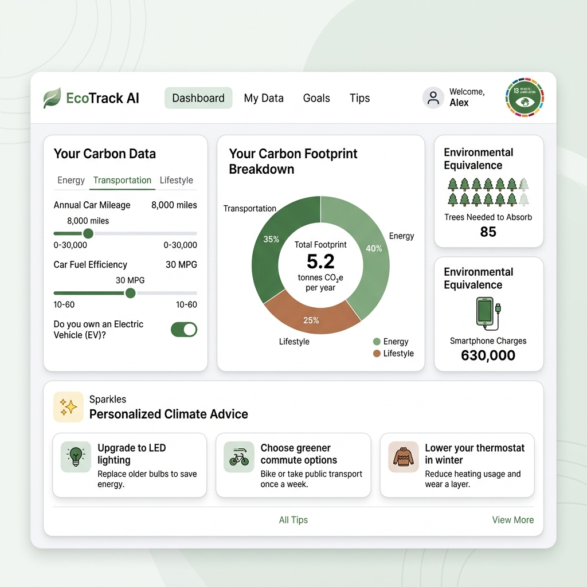

This file is designed for your capstone project submission. Open this page in a browser and click the button below to save it directly as a formatted PDF.
Interactive Carbon Footprint Dashboard & AI Reduction Assistant
The Sustainable Development Goal (SDG) selected for this capstone project is SDG 13: Climate Action. According to the United Nations, SDG 13 focuses on taking urgent action to combat climate change and its devastating impacts. The core objectives of this goal involve strengthening resilience and adaptive capacity to climate-related hazards, integrating climate change measures into national policies, and improving education, awareness-raising, and human and institutional capacity on climate change mitigation, adaptation, and impact reduction.
The decision to focus on SDG 13 stems from the immediate and systemic threat climate change poses to global stability. Global greenhouse gas emissions have reached record levels, leading to rising surface temperatures, melting glaciers, escalating sea levels, and an increase in extreme weather events such as droughts, floods, and severe storms. These changes do not just affect the natural environment; they disrupt food production, displace communities, threaten water security, and disproportionately affect low-income and vulnerable populations. Addressing climate action is fundamental because the success of almost all other SDGs—including poverty eradication, clean water, and life on land—depends on maintaining a stable global climate.
Climate action is not a standalone target. A failure to control emissions will trigger positive feedback loops, causing irreversibility in ecological systems, economic damage, and resource conflicts. Empirically tracking personal contributions is the first step in driving public behavioral shifts.
What is the problem? The problem is the unsustainable rise in individual carbon emissions caused by daily household activities, commuting preferences, and dietary patterns, coupled with a lack of localized awareness. Individuals are generally unaware of how their specific choices (such as electricity consumption, gas heating, vehicle efficiency, diet types, and flight frequencies) convert into raw carbon dioxide (CO₂) emissions.
Where does this problem exist? This issue is widespread in industrialized and urbanized nations. High-consumption lifestyles are heavily reliant on fossil-fuel-powered grids and gasoline-based transport networks.
Who is affected? While high-income individuals in urban centers are the primary emitters, the consequences are felt globally. Developing nations, low-lying coastal regions, agricultural laborers, and future generations are disproportionately affected by climate disasters.
Why is it serious and what could happen if unsolved? If personal consumption habits are left unchecked, global warming will exceed the critical 1.5°C threshold outlined in the Paris Agreement. This failure will trigger tipping points: catastrophic ice sheet collapse, widespread crop failures, permanent biodiversity losses, severe urban heatwaves, and a global increase in climate refugees. To meet net-zero targets, structural government policies must be supported by individual carbon accountability.
The proposed solution is EcoTrack AI, a full-stack, responsive web application designed to act as a personal climate action dashboard. The application provides users with a transparent framework to compute their carbon footprint reactively and receive immediate, actionable recommendations to reduce it.
How the system works: The system utilizes a client-side layout where users input their monthly consumption habits under three categories: Energy, Transportation, and Lifestyle. A built-in calculation engine, mapped to EPA-standard conversion factors, translates these inputs in real-time. The results are fed into a Recharts donut chart detailing sector percentages, a stats panel translating the footprint into trees required and phone charges, and a simulated LLM API route that returns three customized, high-impact suggestions to lower emissions based on the user's highest emission sector.
How it helps solve the problem: By turning abstract carbon values (such as "800 kg CO₂") into tangible equivalencies (such as "437 trees to absorb") and displaying immediate comparison metrics, the application builds direct ecological awareness. It bridges the gap between raw data and action by utilizing AI to deliver personalized, realistic steps to reduce individual carbon footprints.
Who will use the application: The primary target users are environmentally conscious households, educational organizations (promoting climate literacy), and green businesses looking to encourage carbon accountability among employees.
The application is engineered using modern web technologies to ensure speed, SEO optimization, and a responsive responsive user experience.
The screenshot below demonstrates the fully operational EcoTrack AI dashboard. It shows the three main sections working in sync: the carbon form inputs on the left, the live donut breakdown chart on the right, and the AI climate suggestions appearing at the bottom.

The complete project source code is hosted as an open-source repository on GitHub. The repository includes project documentation, components, configuration files, and setup instructions.
While the current version of EcoTrack AI provides robust tracking and recommendations, future developments could expand its capabilities: